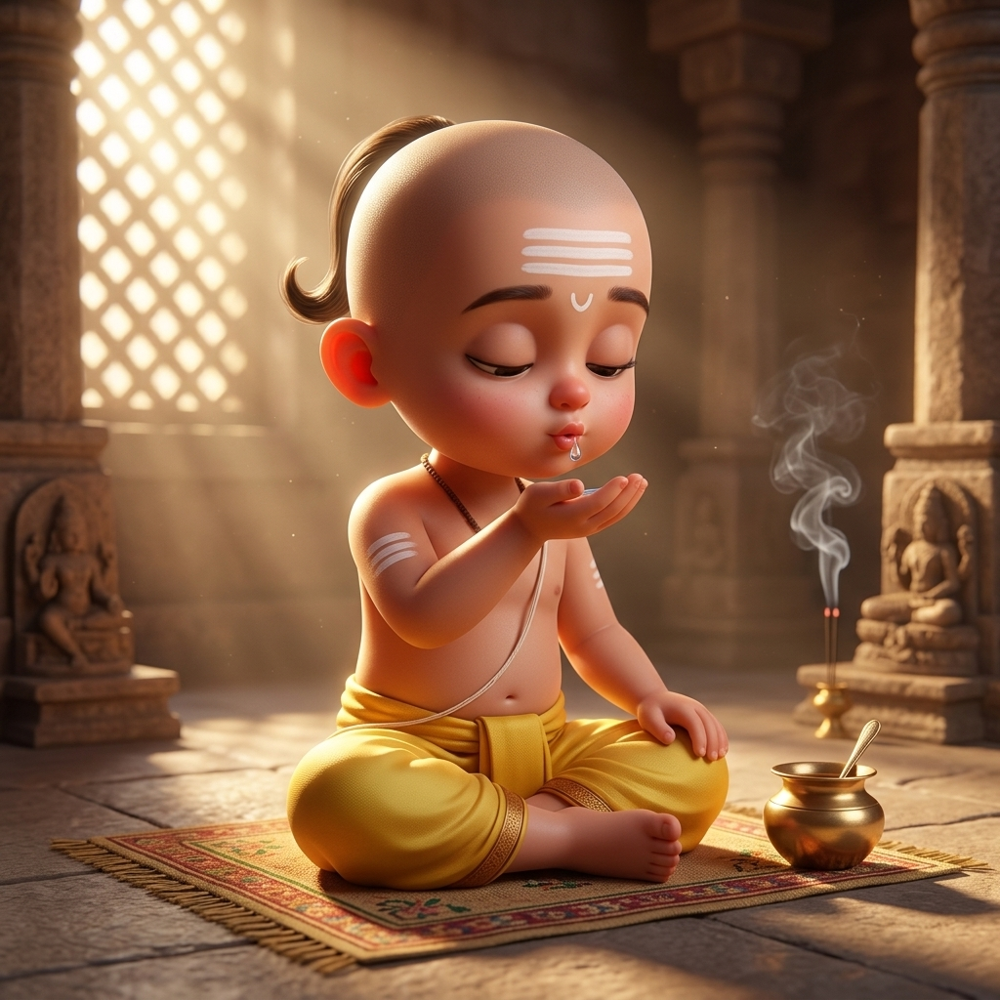

1. शरीर-शुद्धिः (Śarīra-śuddhiḥ)
🧘 Sitting East
सम्पूर्ण मन्त्रः (Complete Mantra)
उच्चारणम् • Pronunciation (IAST)
Vedic phonetics: ā, ī, ū = double hold • ṛ = 'ri' • ś = soft 'sh' • ṣ = retroflex 'sh' • ḥ = visarga echo (namaḥ = namaha) • ṃ = nasal hum.
✨ Chibi Brahmachāri Ācamanam Guide (24 Actions)
Sipping Water (Brahmatīrtha)

Action 1 of 25
Right Palm Base (Sip 1)
ॐ केशवाय स्वाहा ।
oṁ keśavāya svāhā |
Sip water from the base of the right thumb (Brahmatīrtha).
"Salutations to Lord Keśava (Slayer of Keśī, Lord of Creation and Radiance). Svāhā!"
🤲 Physical Action & Posture
▾
💡 Meaning & Context
▾
लोकाः समस्ताः सुखिनो भवन्तु
May all beings be happy. Practicing every sacred syllable in peace.
Prāṇāyāma Rhythm
Inhale 7 Vyāhṛtis (4s) • Hold with Gāyatrī (8s) • Exhale right (4s)
Ready
--
• Inhale left (thumb on right).
• Close both, hold breath & recite mentally.
• Open right, exhale slowly.
• Close both, hold breath & recite mentally.
• Open right, exhale slowly.
Finger Japa Counter
0
Joint: Ring Middle (1)